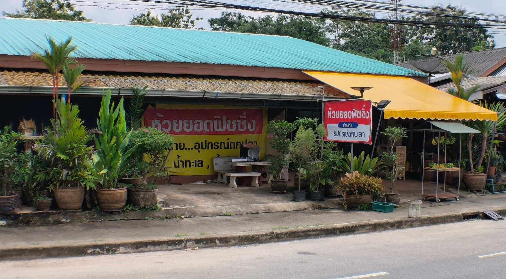
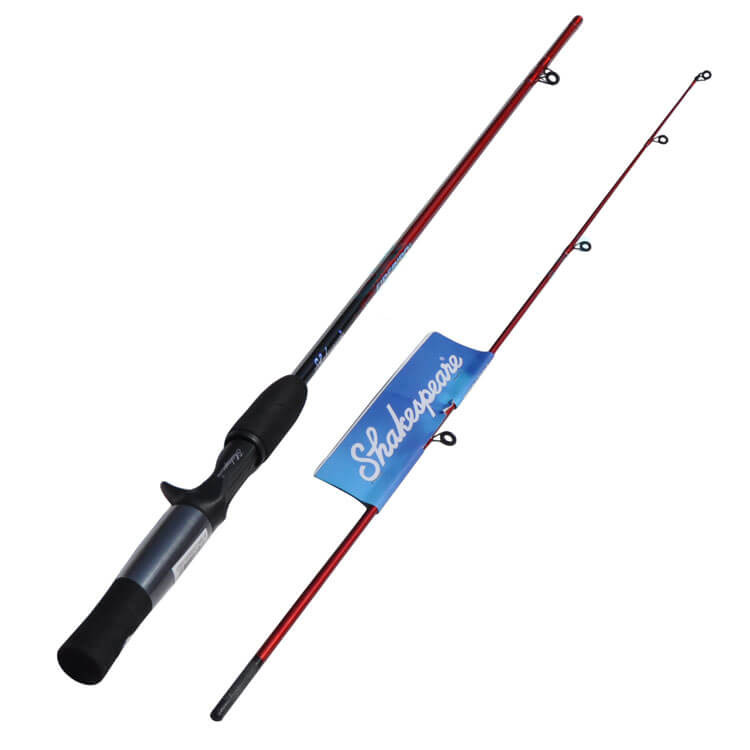
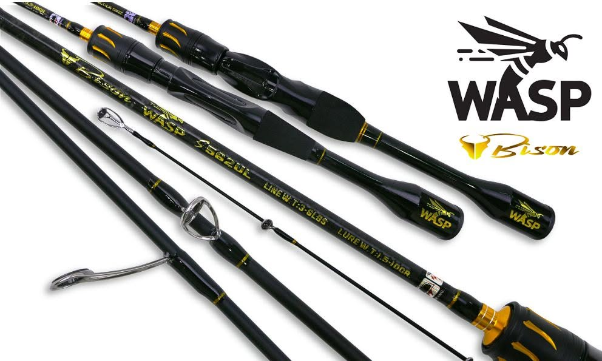
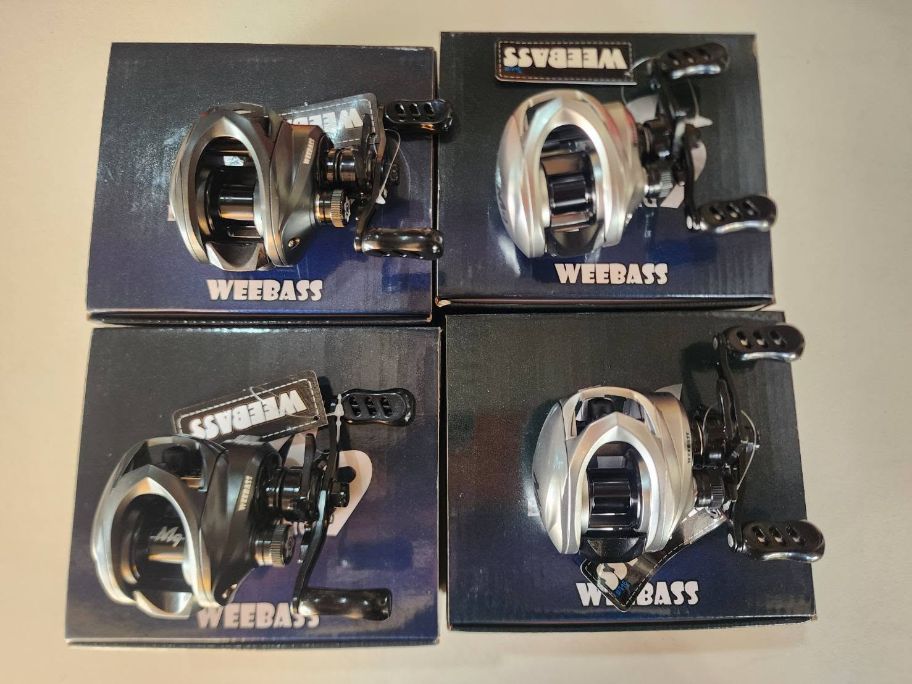
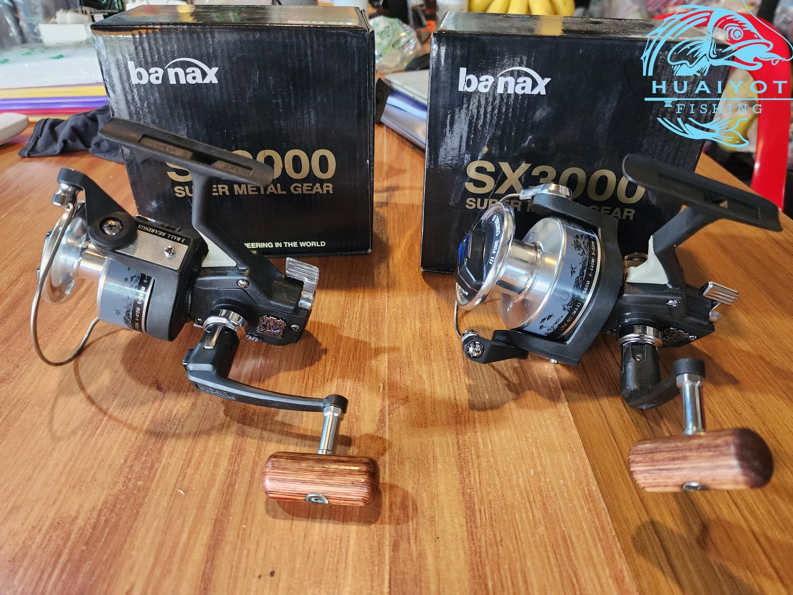
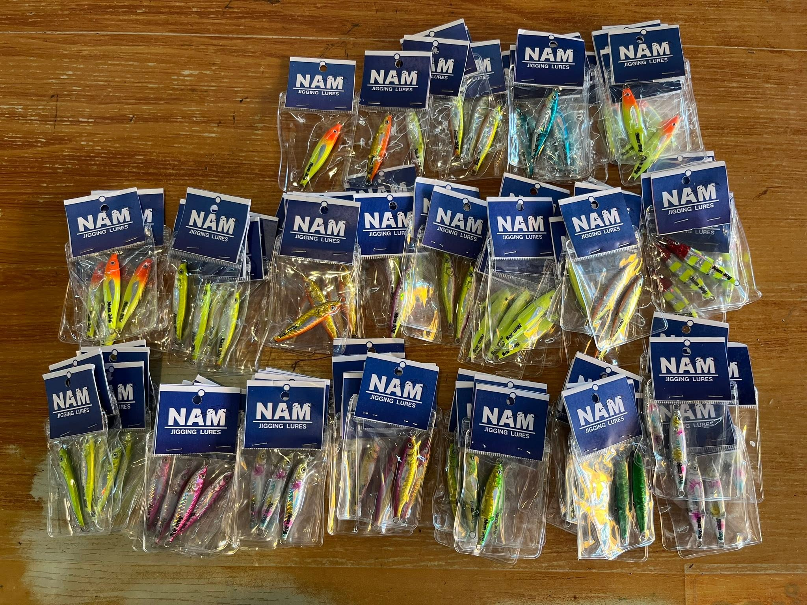
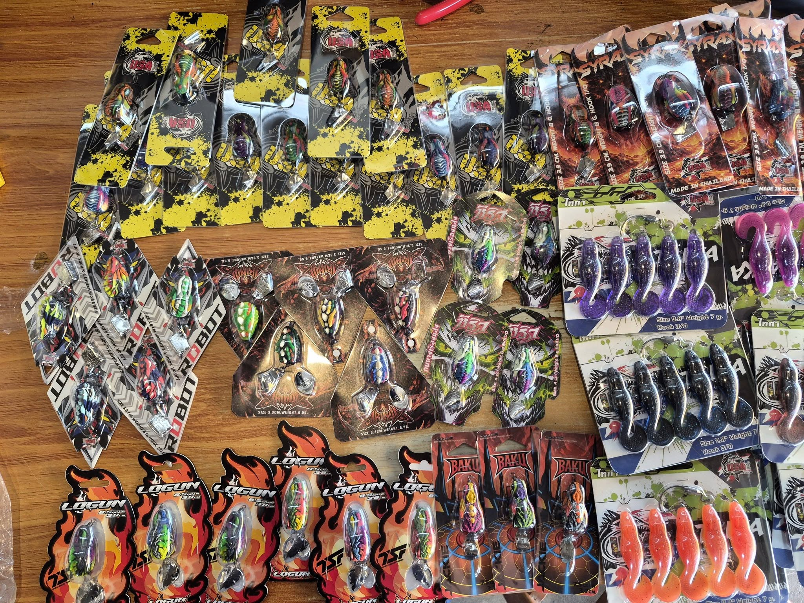
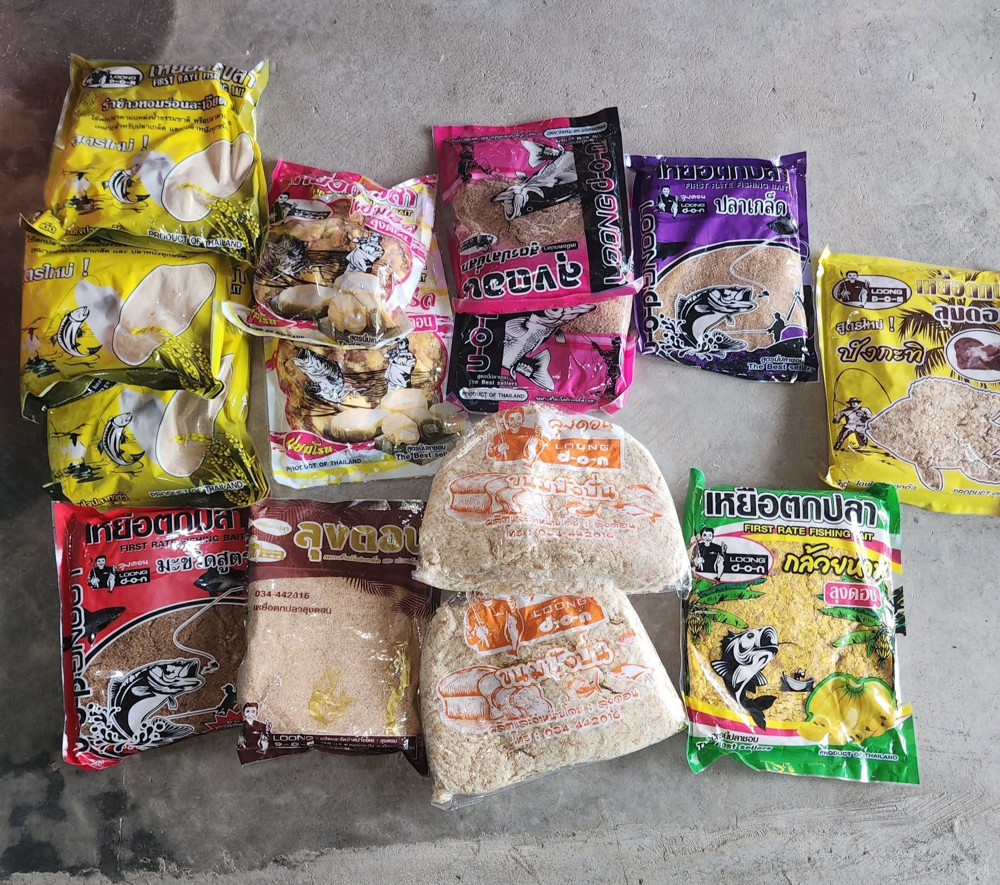
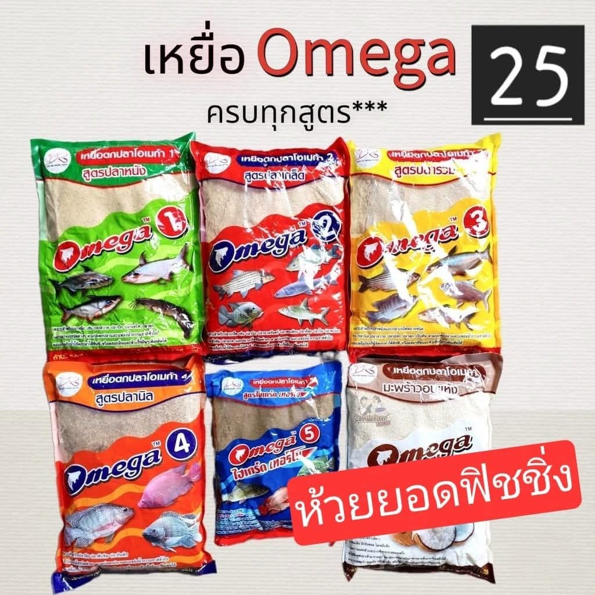
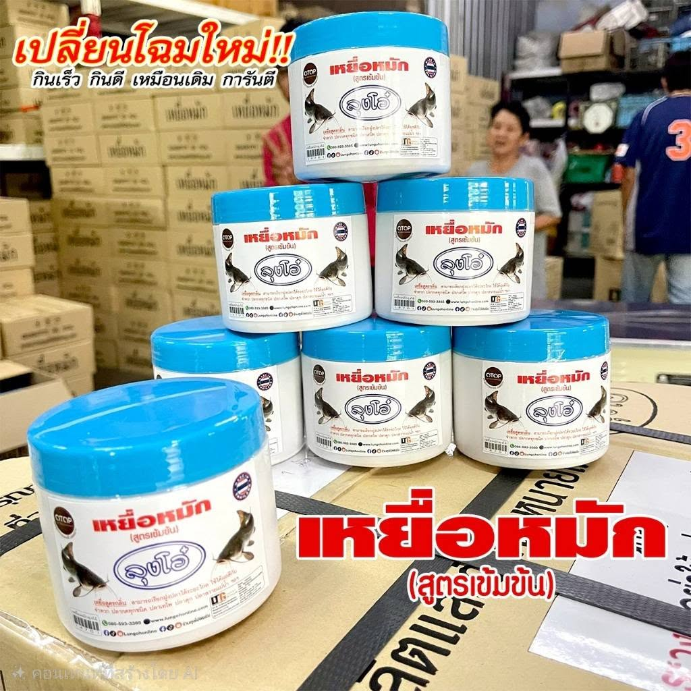

ห้วยยอดฟิชชิ่ง
Huaiyot fishing shop
เปิดบริการตั้งแต่ 08.00-18.30 น.
ห้วยยอดฟิชชิ่ง จำหน่ายอุปกรณ์ตกปลา(ปลีก-ส่ง) เป็นร้านขายอุปกรณ์ตกปลาขนาดใหญ่และครบวงจร เดินทางสะดวก เหมาะสำหรับนักตกปลาที่กำลังมองหาเบ็ด คันเบ็ด หรือเหยื่อปลอมที่มีให้เลือกหลากหลายรูปแบบ พร้อมคำแนะนำที่เป็นกันเองจากทางร้าน

ร้านห้วยยอดฟิชชิ่ง
ตำแหน่งของไกด์จะอยู่ด้านบนของคันเบ็ด รอกจะอยู่ด้านบนของคันเบ็ด ตีเหยื่อได้ไว มีความเสี่ยงที่จะเกิดสายฟู่หรือเหยื่อขาดได้ง่ายกว่าคันเบ็ดสปินนิ่ง
รายละเอียดสินค้า

ที่มารูปภาพ : https://boat-story.com/fishing-equipment-for-newbies/ >
ใช้งานง่าย สายไม่ฟู่ มือหมุนปรับได้ทั้งซ้าย-ขวา ใช้ตกปลาได้แทบทุกชนิดและตีเหยื่อได้หลายประเภท
รายละเอียดสินค้า

ที่มารูปภาพ : https://www.facebook.com/photo.php?fbid=1456326303170185&set=pb.100063784880697.-2207520000&type=3 >
เหมาะสำหรับการตีเหยื่อปลอม เหมาะกับผู้ที่มีประสบการณ์ในการใช้งาน เนื่องจากต้องควบคุมการหมุนของสปูลเพื่อป้องกันสายฟู่
รายละเอียดสินค้า

ที่มารูปภาพ : https://www.facebook.com/photo.php?fbid=1236633921806092&set=pb.100063784880697.-2207520000&type=3 >
ใช้งานง่าย เหมาะสำหรับผู้เริ่มต้น สามารถตีเหยื่อได้หลายประเภท เหมาะสำหรับการตกปลาหลากหลายรูปแบบทั้งน้ำจืดและน้ำเค็ม
รายละเอียดสินค้า

ที่มารูปภาพ : https://www.facebook.com/photo.php?fbid=1433307568805392&set=pb.100063784880697.-2207520000&type=3 >

ที่มารูปภาพ : https://www.facebook.com/photo.php?fbid=1500982648704550&set=pb.100063784880697.-2207520000&type=3 >

ที่มารูปภาพ : https://www.facebook.com/photo.php?fbid=1516017513867730&set=pb.100063784880697.-2207520000&type=3 >

ที่มารูปภาพ : https://www.facebook.com/photo.php?fbid=1483762787093203&set=pb.100063784880697.-2207520000&type=3 >

ที่มารูปภาพ : https://www.facebook.com/photo.php?fbid=1429395815863234&set=pb.100063784880697.-2207520000&type=3 >

ที่มารูปภาพ : https://www.facebook.com/photo?fbid=1418240553645427&set=pb.100063784880697.-2207520000 >
| ประเภท | สินค้า | ราคาเริ่มต้น | เหมาะสำหรับ |
|---|---|---|---|
| คันเบ็ดตกปลา | คันเบ็ดเบทคลาสติ้ง | 500 บาท | ผู้มีประสบการณ์ |
| รอกตกปลา | รอกเบทคลาสติ้ง | 450 บาท | ผู้มีประสบการณ์ |
| คันเบ็ดตกปลา | คันเบ็ดสปินนิ่ง | 500 บาท | ผู้เริ่มต้น |
| รอกตกปลา | รอกสปินนิ่ง | 350 บาท | ผู้เริ่มต้น |